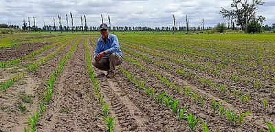
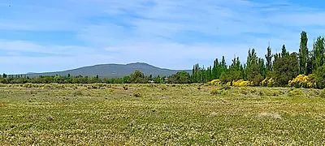
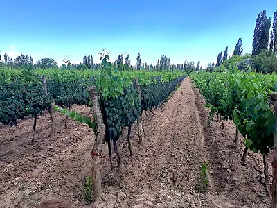
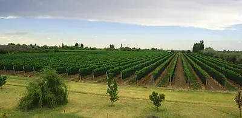
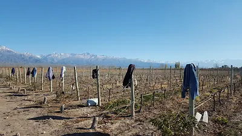
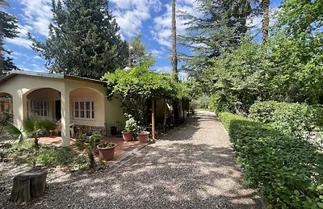

Tous les biens en un seul endroit
46 biens à vendre à Mendoza : vignobles, fermes en production, campo et maisons. Triés par prix par hectare, la terre la moins chère d'abord.
Rechercher un bien
- Filtres rapides :
- Moins de 200 000 US$
- Avec revenus
- Avec maison principale
- Bons droits d'eau
- Accepte ₿
- Avec vidéo
- Plus de 400 ha
Affichage des 46 biens à vendre
Aucun bien ne correspond à ces filtres. Élargissez la fourchette de prix ou de superficie, ou réinitialisez les filtres pour voir les 46 biens.
À vendre (46)
-

General Alvear, Argentina
Campo de 10 000 ha (25 000 acres) sur route asphaltée avec 5 éoliennes et électricité
US$1,6 M 158 US$ par hectare
-

La Resolana, San Rafael, Mendoza
Campo de 1 900 ha (4 690 acres) pour luzerne, bovins et plus
US$1,6 M 843 US$ par hectare
-
Prix réduit

Algarrobal, San Rafael, Mendoza
Campo de 220 ha (540 acres) avec maison du propriétaire et luzerne. Entièrement clôturé, avec beaucoup de bonne eau
US$280 000 1 282 US$ par hectare
-

San Rafael, Argentina
Campo de 345 ha (850 acres) pour bovins, agriculture ou aménagement
US$450 000 1 307 US$ par hectare
-
Prix réduit

Colonia Colomer, San Rafael, Mendoza
Campo de 100 ha (250 acres) pour bovins ou culture, avec verger de coings et maison du propriétaire
US$170 000 1 680 US$ par hectare
-

Los Claveles, Mendoza, Argentina
400 acres (162 ha) avec maison et grand potentiel agricole
US$345 000 2 130 US$ par hectare
-
Vidéo

Punta De Agua, San Rafael, Argentina
Oasis de sources minérales dans le désert, campo de 890 ha (2 200 acres) en microclimat : US$2 millions, négociable
US$2 M 2 246 US$ par hectare
-

Las Malvinas, San Rafael, Mendoza
Belle finca en activité de 36,5 ha (90 acres) produisant maïs, tomates et luzerne, avec corral à bovins
US$210 000 5 765 US$ par hectare
-
Prix réduit

San Rafael, Mendoza, Argentina
13 ha (31 acres) avec vue sur la Sierra Pintada et beaucoup d'eau
US$74 900 5 970 US$ par hectare
-

Rama Caida, San Rafael, Mendoza
22 ha (54 acres) de terres agricoles nivelées de premier choix avec belle vue
US$160 000 7 322 US$ par hectare
-

Los Coroneles, Mendoza, Argentina
50 acres (20 ha) de terre vierge avec vue sur les précordillères
US$150 000 7 413 US$ par hectare
-

Colonia Colomer, San Rafael, Mendoza
Finca de 30 ha (75 acres) avec jolie maison « casa de campo », pâture, corral à bovins et hangar de 10 000 sq ft
US$260 000 8 567 US$ par hectare
-

Las Malvinas,San Rafael, Mendoza
Belle finca de 63 ha (155 acres) en luzerne pour chevaux, bovins et cultures : US$600 000 (négociable)
US$600 000 9 565 US$ par hectare
-
Vidéo

General Alvear, Mendoza
Belle finca de 40 ha (100 acres) avec 2 maisons et vignoble à General Alvear : US$400 000, négociable
US$400 000 9 884 US$ par hectare
-
Accepte ₿

San Rafael, Mendoza, Argentina
Finca d'oliviers et de pruniers bien entretenue, 12 ha (29 acres)
US$140 000 11 930 US$ par hectare
-
Prix réduit

Las Paredes, San Rafael, Mendoza
Finca de 20 ha (50 acres) avec vignoble, tracteur et pick-up
US$250 000 12 355 US$ par hectare
-
Prix réduit

Cuadro Benegas, San Rafael, Mendoza
Finca de 14,6 ha (36 acres) avec vignoble de qualité et verger de pruniers
US$180 000 12 355 US$ par hectare
-

Las Malvinas, San Rafael, Mendoza
Maison neuve sur 11 ha (28 acres) de terres agricoles avec belle vue, 6 semaines avant achèvement
US$150 000 13 237 US$ par hectare
-

Cuadro Benegas, San Rafael, Argentina
Petit vignoble de malbec sur 5 ha (12 acres) en zone touristique, avec place pour construire
US$69 900 14 394 US$ par hectare
-
Prix réduit

Las Paredes, San Rafael, Argentina
Prix réduit de US$60 000 ! 15 ha (37 acres) avec vignoble, maison, tourisme et vente de vin bio
US$220 000 14 693 US$ par hectare
-
Prix réduit

Cuadro Benegas, San Rafael
Belle maison sur 27 ha (66 acres) avec revenus touristiques et oliveraie
US$425 000 15 911 US$ par hectare
-

Cuadro Benegas, San Rafael
Bodega de boutique, vignoble et projet touristique avec restaurant sur 91 ha (225 acres)
US$1,79 M 19 714 US$ par hectare
-

La Nora, San Rafael, Mendoza
11 ha (28 acres) de vignes et de verger avec vinification de boutique
US$230 000 20 297 US$ par hectare
-

Cuadro Bombal, San Rafael, Mendoza
10 ha (25 acres) avec verger de pêchers, terres libres et deux maisons
US$210 000 20 757 US$ par hectare
-

San Rafael, Argentina
Maison de jardin et maison d'hôtes sur une finca de 11 ha (27 acres)
US$269 000 24 619 US$ par hectare
-

Colonia Elena, San Rafael, Mendoza
Société vinicole avec 28 ha (69 acres) de malbec et de cabernet sur une finca de 49 ha (121 acres)
US$700 000 25 069 US$ par hectare
-
Prix réduit

San Rafael, Argentina
Finca de 5,9 ha (14,6 acres) avec maison agréable, verger et vignoble
US$150 000 25 388 US$ par hectare
-

Las Paredes, San Rafael, Mendoza
Finca de 9,7 ha (24 acres) avec maison et piscine et 20 acres de vignes
US$250 000 25 741 US$ par hectare
-

Las Paredes,San Rafael, Mendoza
Vignoble de qualité bien entretenu avec piscine et cabaña, très bien situé
US$150 000 26 860 US$ par hectare
-

Cuadro Benegas, San Rafael, Mendoza
Charmante maison de vignoble avec piscine, malbec et verger sur 13 ha (32 acres)
US$350 000 27 028 US$ par hectare
-
Prix réduitVidéo

Cuadro Nacional, Mendoza, Argentina
Bodega primée sur 15 ha (36 acres) avec vignoble de qualité
US$450 000 30 888 US$ par hectare
-

La Llave Vieja, San Rafael, Mendoza
Belle maison sur bon terrain avec oliviers
US$215 000 42 502 US$ par hectare
-
Vidéo

Cuadro Bombal, San Rafael, Mendoza
Huilerie d'olive de boutique sur une finca de 8 ha (20 acres) avec cabañas touristiques et vergers
US$550 000 67 954 US$ par hectare
-
Prix réduit

San Rafael, Mendoza
Bodega de boutique avec vignoble, verger, maison avec piscine et bon chiffre d'affaires
US$595 000 133 662 US$ par hectare
-
Prix réduitVidéo

San Rafael, Mendoza
Beau domaine historique avec piscine, maison et maisons d'hôtes
US$550 000 169 885 US$ par hectare
-
Vidéo

Valle De Uco, Mendoza
Valle de Uco ! Domaine viticole exceptionnel avec exports de vins primés et projet de resort de luxe
US$2,5 M Trois vignobles au total
-

-
Prix réduit

Gualtallary, Tupungato, Mendoza
Vignoble premium pour grands vins avec installation de vinification, Valle de Uco, Mendoza
US$1,65 M Domaine de 45,7 ha et vin primé
-

Vistaflores, Valle De Uco, Mendoza
Vignoble bio de rêve pour grands vins avec vue saisissante dans le Valle de Uco
US$1,5 M L'emplacement, l'emplacement, l'
-
Prix réduit

San Rafael, Mendoza, Argentina
Belle finca touristique boisée avec cabañas, piscine et vignoble
US$700 000 Sur une route asphaltée !
-

San Rafael, Mendoza, Argentina
Demeure de maître de 18 pièces pour bed & breakfast à San Rafael
US$550 000 L'emplacement, l'emplacement, l'
-

Tunuyan, Mendoza
De l'eau, de l'eau, de l'eau ! Finca rentable en bord de rivière avec vue sur les Andes et sources minérales
US$310 000 Potentiel touristique – Valle de
-

San Rafael, Argentina
Vignoble de malbec avec ancienne maison coloniale et piscine
US$295 000 10 ha (25 acres) : excellent pot
-
Prix réduit

Rama Caida, San Rafael, Mendoza
Superbe propriété de jardin clos de murs avec maison et piscine sur près d'un acre, entièrement meublée
US$160 000 Prix vient de baisser !
-

Pueblo Benegas, San Rafael, Argentina
Belle maison avec piscine sur un demi-acre en zone touristique
US$125 000 Actuellement exploitée en locati
-

Valle De Uco, Mendoza
Bodega de boutique dont le vin est classé parmi les meilleurs du monde ! : US$1,5 million
Prix sur demande Vues spectaculaires sur les Ande